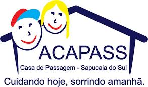

 Horário de visitas: Das 8h até 18h
Horário de visitas: Das 8h até 18h
 Atendemos nos finais de semana.
Atendemos nos finais de semana.
ACAPASS
A Associação Casa de Passagem de Sapucaia do Sul - ACAPASS é uma organização não governamental (ONG) de caráter filantrópico que acolhe crianças de 0 à 16 anos de forma provisória. Estas crianças passam a viver no abrigo a partir de uma medida protetiva de acolhimento institucional, devido ao abandono ou a casos em que as famílias encontram-se impossibilitadas de cumprir sua função de cuidado e proteção, conforme rege o Estatuto da Criança e Adolescente – ECA (ECA, Art. 101).
Instruções para visita
Venha como se sentir a vontade e traga muito amor e paciência para dar.
Horário de visitas: Das 8h até 18h
Atendemos nos finais de semana.